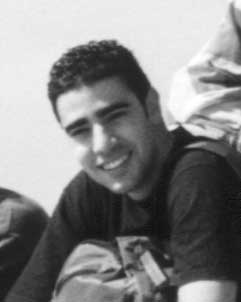
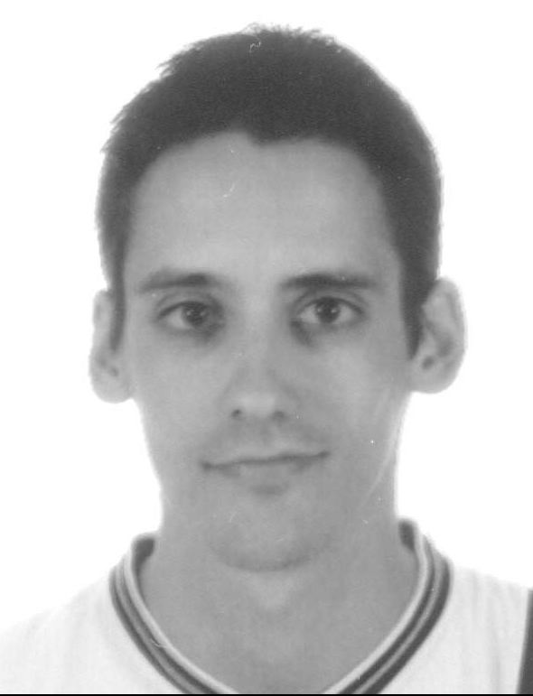

| People |
|
Pedro Garcia Lopez, PhD |
ANTS Framework Architect, MOVE Project Coordinator.
Email: pgarcia@etse.urv.es |
|
Oriol Montalà Pinyol |
MOVE! Architect and Developer. Engineer in Computer Science. Now working Now working with the ECOO Team at INRIA Lorraine (Nancy, France). E-Mail: Oriol.Montala@loria.fr |
 |
Carles Pairot Gavaldà |
MOVE! Architect and Developer. Engineer in Computer Science.
PhD Student.
Home page: http://www.etse.urv.es/~cpairot
E-Mail: cpairot@etse.urv.es |
 |
Francesc Piñas Dalmau |
MOVE! Architect and Developer. Student of Technical Engineering in Computer Science. Now doing last course. E-Mail: fpd@tinet.org |
|
|